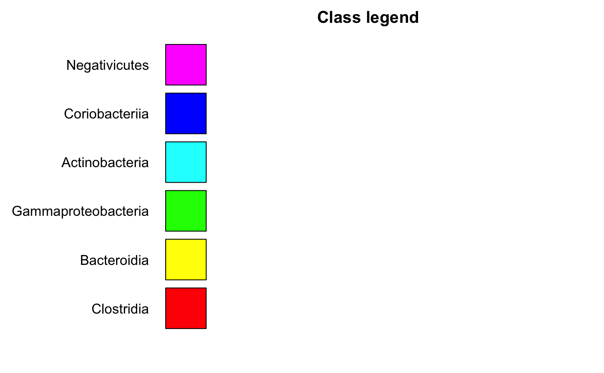
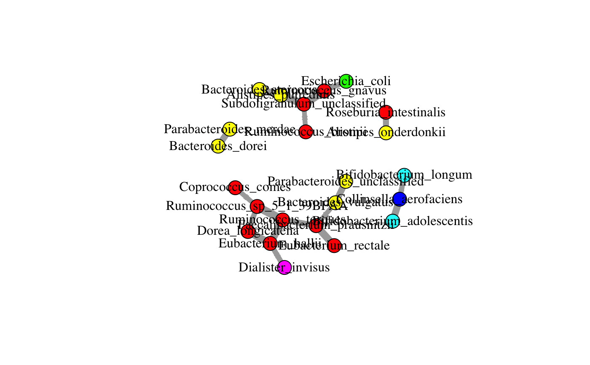

buildNetwork.RdWrapper for microbial network inference methods.
SPIEC-EASI, CoNet (see function barebonesCoNet) and bnlearn are supported.
Abundances are assumed to have been already filtered and transformed.
The function returns the network as an igraph object,
with nodes labeled and colored at the selected taxonomic levels
and, for SPIEC-EASI and CoNet, edges in red or green, depending on whether they
represent negative or positive associations.
buildNetwork(abundances, lineages = NULL, method = "mb", repNum = 20, minStrength = 0.5, alpha = 0.05, renorm = FALSE, initEdgeNum = 100, methodNum = 2, directed = FALSE, nameLevel = "Genus", colorLevel = "Class", widthFactor = 10)
| abundances | a matrix with taxa as rows and samples as columns |
|---|---|
| lineages | a matrix with lineages where row names match row names of abundances; first column gives kingdom, following columns give phylum, class, order, family, genus and species (obligatory for SPIEC-EASI) |
| method | mb or glasso (SPIEC-EASI), any combination of pearson, spearman, bray and/or kld (CoNet), hc, tabu, h2pc, mmhc, rsmax2, aracne, pc.stable, gs, fast.iamb, iamb.fdr, mmpc, hpc or si.hiton.pc (bnlearn, for aracne mi is set to mi-g) |
| repNum | the number of iterations for CoNet and of bootstrap iterations in SPIEC-EASI and bnlearn; can be omitted (set to 0) for time-intensive bnlearn methods or for CoNet without p-values |
| minStrength | bnlearn only: the minimum probability for an arc to appear across bootstraps (only applicable if repNum is set larger 1) |
| alpha | p-value threshold for bnlearn and CoNet (ignored in methods aracne, hc, tabu, rsmax2, mmhc and h2pc) |
| renorm | compute correlation p-values in CoNet with renorm enabled (slow) |
| initEdgeNum | CoNet parameter for the number of initial top and bottom edges |
| methodNum | CoNet threshold on the minimum method number needed to keep an edge (only used when more than one method is provided) |
| directed | bnlearn only: infer a directed network (hc, tabu, rsmax2, mmhc and h2pc only infer directed networks, aracne only undirected networks) |
| nameLevel | the taxonomic level used for node names (only if lineages provided) |
| colorLevel | the taxonomic level used for node colors (only if lineages provided) |
| widthFactor | edge width scaling factor |
igraph object
For SPIEC-EASI, edge width represents the abolute of the regression coefficients, whereas for bnlearn,
it represents the probability of an arc to re-appear across bootstrap iterations. For CoNet, it either
represents absolute association strength, method number supporting an edge or significance,
depending on whether more than one method was used to compute the network and whether or not
p-values were computed (significance is defined as -log10(pval)). For single dissimilarities in CoNet, edge weight
is scaled (see barebonesCoNet for details) such that for all network construction methods,
a thicker edge means a stronger/more stable/more significant association.
For CoNet, p-values are computed by default with cor.test for correlations and permutations and bootstraps
for dissimilarities and are multiple-testing corrected with Benjamini-Hochberg.
P-value computation in CoNet can be disabled by setting repNum to 0.
If applicable, the color code for the node colors is plotted in a separate bar plot.
SPIEC-EASI and CoNet return undirected graphs, whereas bnlearn methods support the inference
of directed graphs. SPIEC-EASI methods tend to be faster than bnlearn methods.
The returned network can be visualized with igraph's interactive network visualisation
function tkplot or simply with igraph's plot function. When RCy3 is installed and Cytoscape is open,
the graph can also be sent to Cytoscape directly with RCy3's function createNetworkFromIgraph().
data(ibd_taxa) data(ibd_lineages) top.indices=sort(rowSums(ibd_taxa),decreasing = TRUE,index.return=TRUE)$ix[1:30] taxa=ibd_taxa[top.indices,] lineages=ibd_lineages[top.indices,] hc.out=buildNetwork(taxa,lineages,method="hc",nameLevel="species")#> #> Bayesian network learned via Score-based methods #> #> model: #> [Eubacterium_rectale][Ruminococcus_sp_5_1_39BFAA][Bifidobacterium_longum] #> [Akkermansia_muciniphila][Dialister_invisus][Bacteroides_vulgatus] #> [Prevotella_copri][Roseburia_intestinalis][Bacteroides_ovatus] #> [Streptococcus_thermophilus][Bacteroides_stercoris][Parabacteroides_merdae] #> [Enterococcus_faecium][Faecalibacterium_prausnitzii|Eubacterium_rectale] #> [Ruminococcus_gnavus|Eubacterium_rectale] #> [Ruminococcus_torques|Ruminococcus_sp_5_1_39BFAA] #> [Collinsella_aerofaciens|Bifidobacterium_longum] #> [Alistipes_onderdonkii|Roseburia_intestinalis] #> [Bacteroides_dorei|Parabacteroides_merdae] #> [Bacteroides_caccae|Parabacteroides_merdae] #> [Parabacteroides_unclassified|Bacteroides_vulgatus] #> [Escherichia_coli|Faecalibacterium_prausnitzii] #> [Subdoligranulum_unclassified|Ruminococcus_gnavus:Ruminococcus_torques] #> [Bifidobacterium_adolescentis|Collinsella_aerofaciens] #> [Eubacterium_hallii|Eubacterium_rectale:Ruminococcus_torques] #> [Ruminococcus_bromii|Subdoligranulum_unclassified] #> [Alistipes_putredinis|Subdoligranulum_unclassified:Bacteroides_stercoris] #> [Dorea_longicatena|Ruminococcus_sp_5_1_39BFAA:Bifidobacterium_longum:Eubacterium_hallii] #> [Coprococcus_comes|Eubacterium_hallii] #> [Bacteroides_uniformis|Alistipes_putredinis] #> nodes: 30 #> arcs: 22 #> undirected arcs: 0 #> directed arcs: 22 #> average markov blanket size: 1.87 #> average neighbourhood size: 1.47 #> average branching factor: 0.73 #> #> learning algorithm: Hill-Climbing #> score: BIC (Gauss.) #> penalization coefficient: 2.521713 #> tests used in the learning procedure: 1073 #> optimized: TRUE #> #> [1] "Carrying out 20 bootstraps to assess edge strengths..." #> [1] "logLik: 8099.57779267286" #> [1] "AIC: 8017.57779267286" #> [1] "BIC: 7892.79736287917" #> Eubacterium_rectale Faecalibacterium_prausnitzii #> "Clostridia" "Clostridia" #> Ruminococcus_gnavus Escherichia_coli #> "Clostridia" "Gammaproteobacteria" #> Ruminococcus_sp_5_1_39BFAA Subdoligranulum_unclassified #> "Clostridia" "Clostridia" #> Bifidobacterium_adolescentis Bifidobacterium_longum #> "Actinobacteria" "Actinobacteria" #> Akkermansia_muciniphila Dialister_invisus #> "Verrucomicrobiae" "Negativicutes" #> Bacteroides_uniformis Ruminococcus_torques #> "Bacteroidia" "Clostridia" #> Bacteroides_vulgatus Ruminococcus_bromii #> "Bacteroidia" "Clostridia" #> Prevotella_copri Collinsella_aerofaciens #> "Bacteroidia" "Coriobacteriia" #> Alistipes_putredinis Dorea_longicatena #> "Bacteroidia" "Clostridia" #> Roseburia_intestinalis Bacteroides_ovatus #> "Clostridia" "Bacteroidia" #> Streptococcus_thermophilus Eubacterium_hallii #> "Bacilli" "Clostridia" #> Bacteroides_stercoris Parabacteroides_merdae #> "Bacteroidia" "Bacteroidia" #> Alistipes_onderdonkii Bacteroides_dorei #> "Bacteroidia" "Bacteroidia" #> Enterococcus_faecium Bacteroides_caccae #> "Bacilli" "Bacteroidia" #> Parabacteroides_unclassified Coprococcus_comes #> "Bacteroidia" "Clostridia"#> Warning: number of items to replace is not a multiple of replacement length#> Warning: number of items to replace is not a multiple of replacement lengthplot(hc.out)